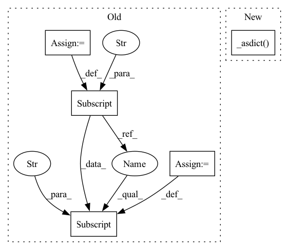

Pattern ID :41442

Before Change
def asdict(self) -> Dict[str, Any]:
dct = super().asdict()
dct["head"] = self.head.id
dct["tail"] = self.tail.id
return dct
@classmethod
After Change
_post_init_single_label(self)
def asdict(self) -> Dict[str, Any]:
dct = super()._asdict(overrides={"head": self.head.id, "tail": self.tail.id})
return dct
@classmethod
def fromdict(
In pattern: SUPERPATTERN
Frequency: 3
Non-data size: 5
Instances
Fragment ID: 116533504
Project Name: christophalt/pytorch-ie
Commit Name: 4a63113b24839e4e4f4ec71fdb5be3de9827bb68
Time: 2022-09-15
Author: ArneBinder@users.noreply.github.com
File Name: src/pytorch_ie/annotations.py
M Class Name: BinaryRelation
N Class Name: BinaryRelation
M Method Name: asdict(1)
N Method Name: asdict(1)
M Parent Class: Annotation
N Parent Class: Annotation
M File Name: src/pytorch_ie/annotations.py
N File Name: src/pytorch_ie/annotations.py
M Start Line: 117
M End Line: 119
N Start Line: 117
N End Line: 117
'>
Before Change
return self.visuals_dict
def save_current_results(self):
self.results_dict["name"] = self.path
self.results_dict["result"] = self.output
return self.results_dict
def load(self):
After Change
def save_current_results(self):
self.results_dict._replace(name=self.path)
self.results_dict._replace(result=self.output)
return self.results_dict._asdict()
def load(self):
load_path = self.opt["path"]["resume_state"]
self.load_network(load_path, network=self.net, network_label="net")
'>
Fragment ID: 116533505
Project Name: janspiry/distributed-pytorch-template
Commit Name: 1111bc747c5c510cf53bf2cb753fd8a9d4cfc6a0
Time: 2022-02-25
Author: lw_jiang@foxmail.com
File Name: models/ae_model.py
M Class Name: Model
N Class Name: Model
M Method Name: save_current_results(1)
N Method Name: save_current_results(1)
M Parent Class: BaseModel
N Parent Class: BaseModel
M File Name: models/ae_model.py
N File Name: models/ae_model.py
M Start Line: 97
M End Line: 99
N Start Line: 85
N End Line: 87
'>
Before Change
dct = super().asdict()
// replace object references with object hashes
dct["head"] = self.head.id
dct["tail"] = self.tail.id
return dct
@classmethod
After Change
def asdict(self) -> Dict[str, Any]:
// replace object references with object hashes
dct = super()._asdict(overrides={"head": self.head.id, "tail": self.tail.id})
return dct
@classmethod
def fromdict(
'>
Fragment ID: 116533503
Project Name: christophalt/pytorch-ie
Commit Name: 4a63113b24839e4e4f4ec71fdb5be3de9827bb68
Time: 2022-09-15
Author: ArneBinder@users.noreply.github.com
File Name: src/pytorch_ie/annotations.py
M Class Name: MultiLabeledBinaryRelation
N Class Name: MultiLabeledBinaryRelation
M Method Name: asdict(1)
N Method Name: asdict(1)
M Parent Class: Annotation
N Parent Class: Annotation
M File Name: src/pytorch_ie/annotations.py
N File Name: src/pytorch_ie/annotations.py
M Start Line: 148
M End Line: 152
N Start Line: 147
N End Line: 147